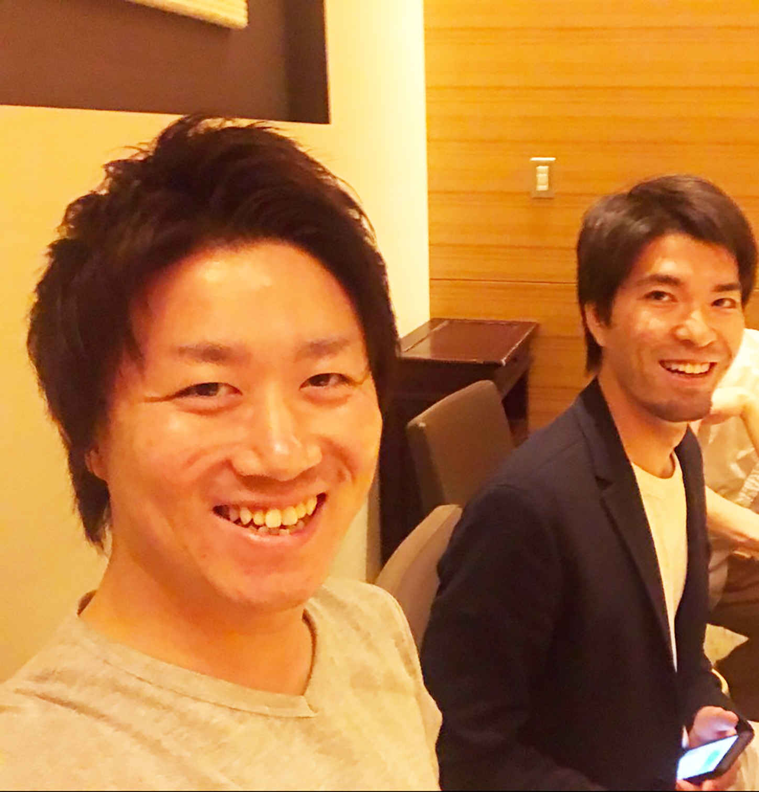

| 人生を思いのままに操る極意 〜自分を１秒で変える人生逆転マジック〜 | |
| 加藤純一 & 後藤輝 | |
| Hitotsuku Publication (2018) | |
加藤純一・後藤輝
この度は、数ある書籍の中から本書を手に取っていただき、誠にありがとうございます。
本書では、２人の起業家が、ビジネスを通して自分の人生を劇的に変えたストーリーを、ざっくばらんにお話ししています。
20
代のときに、どのようなことを考え、どのような行動をしたのか。人生の１つの節目である30
代を、どう生きていくのか。40
代、50
代は......。そんな、人生を歩んでいく中で、誰もが考える生き方について、自由な生活を手に入れた２人の考えを、対談形式でお伝えしています。
さて、まず１つあなたに質問をさせてください。
あなたは今、自分の人生について、どれだけ具体的に、現実的に考えられているでしょうか？
結婚して、子供と楽しく暮らしたい、笑顔で暮らせるマイホーム、かっこいいマイカー、定期的に旅行へ行きたい、美味しいご飯を食べたい、趣味を楽しむ、ゆったりした老後を過ごしたい......。例え小さなことでも、人生に願望や憧れが１つもない人はいないでしょう。
自分の人生に夢があるのは、とても素晴らしいことです。しかしそんな夢を現実に叶えるために、誰もがどうしても突き当たってしまう問題があります。それは、「お金と時間の問題」
です。
当然ですが、人間が幸せに生きていくためには、少なからずお金は必要です。だからお金を稼ぐために、この世の中の誰もが働いています。
「働く」と簡単には言いますが、今の日本では、この働き方が大きな社会問題になっています。過酷な長時間労働、働いても増えないお給料、人間関係の難しさ、増加するハラスメントの悩み......。そんな厳しい環境の中、これから何十年も、我々は仕事をしていかなければならないのです。
もちろん、そんな環境が全てではなく、働きやすい環境はたくさんあるでしょう。しかし、どこで働くにしても、自分のお金や時間は、仕事によって縛られることになります。そんな状況では、自分の理想の人生を手に入れることは不可能です。
では、お金の自由と時間の自由の両方を手に入れるためには、一体どうすれば良いのでしょうか？
おそらく多くの人が、この質問にはっきりと答えることはできないでしょう。悲しいことに、この生きていくうえで大事なことを、親も、学校も、会社も、誰も教えてくれません。自分でその答えを探求し、見つけるしかないのです。
あなたがその答えを見つけるきっかけとして本書では、今からどんな考えを持ち、どんな行動をするべきなのか、お話ししていきます。
本書を通して、あなたが今までの人生を改めて見つめ直し、これからの人生を変えるきっかけにしていただけましたら、何より幸いです。

写真 左：加藤純一 右：後藤輝
【加藤】はじめまして！ 加藤純一です。これから、僕と後藤さんのビジネスストーリーを、ざっくばらんにお伝えしていきます！ 後藤さんよろしくお願いします。
【後藤】はじめまして！ 後藤輝です。よろしくお願いします。
【加藤】僕たちのことを知らない方が、たくさんいると思いますので、まずは簡単に自己紹介しましょうか。
【後藤】そうですね。まずは加藤さんからお願いします！
【加藤】僕は、１９９０年生まれ、茨城県出身で、現在は物販ビジネスと情報発信ビジネスを行う会社の代表をしています。今は、会社の代表にまでなれている僕ですが、３年前までは、とある会社で営業職をしていました。
【後藤】加藤さんは、以前は営業の仕事をされていたんですね。
【加藤】はい。でも会社の仕事は、正直ブラックでした。改善されない長時間労働、増えないお給料、毎日節約をして生きていく。そんな会社員生活に、当時は辛さを感じていました。また、そんな環境に加えて、父親が５００万円の借金をしていたことを、僕は20
代にして知ったのです。「ただでさえ苦しい生活が、さらに苦しくなるのか......」と、当時はすごく憂鬱になっていました。
【後藤】えー。それはきついですね。
【加藤】でも、「何かしなければ、何も変わらない。だから自分の力でなんとかしよう！」と思い立ち、それからさまざまなビジネスにチャレンジしてきました。そして情報を集めていくうちに、ネットビジネスと出会い、ネット物販を知ってからは、会社員の頃のお給料以上のお金を稼げるようになっていきました。そして脱サラも叶えて、ビジネスを成長させて、僕は現在のように会社を設立できるまでになったのでした。
【後藤】すごいですね。逆境に打ち勝って、よく加藤さん行動していけましたね。
【加藤】いえいえ。自分だけなら、絶対に無理だったと思います。僕は、21
歳で結婚して、家族がいました。その家族の存在が、「なんとかしよう」と思えたきっかけでした。でも現在は、そんな大切な家族と幸せに暮らせているので、頑張って本当によかったと思えています。では次に、後藤さんも自己紹介をお願いします。
【後藤】僕は、１９８８年生まれ、滋賀県出身で、現在は物販コミュニティで講師をしています。僕は20
代の頃、地元の滋賀県で、友人と飲食店を切り盛りしていました。当時は飲食業で起業する夢があったので、ひたすら仕事に没頭していました。
【加藤】後藤さんは、飲食店の経営をされていたんですね。
【後藤】はい。しかしお店の経営が思うようにいかず、副業で深夜アルバイトまでやらなければならないくらい、生活に追い込まれていました。お店の方は、月３～10
万円しか稼げず、ときには収入０の月もあったくらいでした。だから深夜アルバイトで、月に15
万円ほど稼いでいました。
【加藤】うわ。それはかなり大変ですね......。
【後藤】そんな生活がさすがにきつくなったので、「何か現状を変えなければ！」と僕も考えるようになりました。ひたすら情報を模索して、ネットビジネスと出会い、コミュニティに入ってネット物販を勉強していきました。すると、本業とアルバイトの収入以上のお金を稼げるようになっていき、苦しい生活から解放されるようになったのでした。
【加藤】後藤さんも、「変わらなければ」と行動していったんですね。
【後藤】そうですね。そして現在は、再び飲食で起業する夢を叶えるための資金作りをしながら、加藤さんのビジネスパートナーとして、一緒にお仕事をさせていただいています。
【加藤】過去に苦しむことが多かった僕たちですが、今では以前とは比べものにならないくらい、「お金と時間の自由」がある生活ができています。仕事はもちろん、プライベートも、全てが楽しいと思える生活を送っているんです。
【後藤】これって当時の僕たちでは、絶対考えられない環境ですよね。しかもそんな生活を、30
代までに叶えられたのです。
【加藤】さて、そんな僕たちの経験談をお話ししていく前に、まずあなたに１つ考えていただきたいことがあります。それは、「今あなたがやっている仕事は、楽しいと感じられているか？」
ということです。
【後藤】会社員の生活をしていると、今の仕事が楽しいのかどうかをじっくり考えることが少なくなります。でも、仕事を真剣に見つめ直してみるのは、非常に重要なことなのです。
【加藤】胸を張って、心の底から「仕事が一番楽しいです！」と言えるのであれば、とても素晴らしいです。でもそんな人は、実は今の世の中ではすごく少ないのです。
【後藤】働いている多くの人が、「仕事って、きつくて大変なものなんだ」
と思っていますからね。実際、僕も以前まではそういうものだとしか考えられていませんでした。
【加藤】正直僕もそうでした。会社員の頃の僕は、「周りの生活を支えるために働く」という気持ちが何より大きかったです。自分よりも、まずは家族を支えるために、借金を返すために、朝から夜遅くまでひたすら働いてお金を稼いでいました。
【後藤】それは大変ですね。でも僕も飲食店で働いていた頃は、自分のお金や時間のことを全く考えられてなかったです。友人と経営していたお店を、潰さずになんとか続けようと精一杯で、もう必死な状態でした。しかしその結果、お店を続けていながらも年休が２日、月収が３万円、少ないときは０という生活をしなければならなくなっていました。
【加藤】年休２日で、そんな収入は、さすがに生きていけないですよね......。
【後藤】ええ。さすがにそれでは生活していけないので、深夜アルバイトで食いつないでいました。だから、体と心が休まる時間なんて全然なかったです。
【加藤】そんな環境だと、仕事の楽しさを考える意識が薄れてしまいますね。「そんなことを考えている余裕があるなら、目の前の仕事をこなさないと！」と、考えてしまいそうです。
【後藤】当時はそれが全てでしたから。でも今考えてみると、「仕事が楽しい」とも、何とも考えられていなかった自分が、本当に良くなかったなと感じます。やっぱり自分の気持ちが、全ての行動を作る要因になりますので。
【加藤】そうですね。僕も今思うと、「仕事が楽しい」と考える気持ちすらなかった自分に、虚しさを感じてしまいます。
【後藤】だから、「仕事ってきつくて、大変なものなんだ」
と泣き寝入りするのはいけません。そうする前にまず、「何がきついんだろう？」「どこが大変なんだろう？」と、立ち止まってじっくり考えてみることが大事なんです。
それで、自分自身が仕事に対して気付くことも、たくさんあるのですから。
【加藤】短い時間だけでも、少し立ち止まって自分の気持ちを考えてみるのは大切です。自分が悩んでいる要因が、会社での業務自体なのか、人間関係なのか、収入面なのか、それは人それぞれにあるものだと思います。でも、自分自身が意識して原因を知る
、これが人生を変える第一歩になると、僕はあなたにまずは言いたいです。
【後藤】どんなことも、まず自覚をしなければ行動には結びついていきません。仕事の楽しさや辛さを、改めて意識するのは確かに大事ですね。
【加藤】人間は、普通何か苦しいことがあると、それから離れようとするものです。でもそれが仕事になると、自分が苦しい状態になって自覚していても、その環境から抜け出せない人が非常に多くいます。それは自覚するという第一歩ができても、自分を周りに合わせてしまうもう１つの障害を、乗り越えられていないからです。
【後藤】人間は、「きついけど、周りのみんなは普通に働いているから、耐えなければいけない」「苦しくても、働かないといけないから我慢しなきゃ」と、どうしても考えてしまいます。それで、楽しくなくても会社に行って仕事する、という繰り返しになってしまうんですね。
【加藤】「周りがそうなんだから、自分もそうしなきゃ」と考える人は、特に日本人では多いんです。例えば、あなたが人生を振り返ってみて、「周りが遊んでるから、自分も合わせてその遊びをしなきゃ」「周りが受験するから、自分も頑張って受験しなきゃ」「周りが就職してるから、自分も何とか就職しなきゃ」と考えたことが、一度や二度あるのではないでしょうか？ 周りが会社員だから、自分も会社員で働く、そしてそれ以外の働き方を知らない
、そんな人は世の中にたくさんいます。
【後藤】周りと比べて周りと合わせる気持ちは、正直よく分かります。飲食店で働いていた頃、僕と一緒に働いていた友人が病気で仕事ができなくなったときが、実はあったんです。そのときに、「友人が大変なときだからこそ、自分もこの大変な状況を耐えて頑張らなければならない」「大変な状況でも、きついアルバイトをして、働いてお金を稼がなければならない」という友人の苦しみありきの考えしか、当時は僕も持てていませんでした。自分がどうなれば楽に働いていけるかよりも、周りの人と比べて、自分を厳しい方へ厳しい方へと追い込んでいました。
【加藤】そうだったんですね。友人が仕事できなくなってしまうのは、とても辛いことでしょうし、仕方がない部分もありますからね。そういった後藤さんの周りの環境も、その思いを加速させた要因かもしれません。
【後藤】そうですね。当時は、精神的にいろいろときつかったです......。
【加藤】正直、僕も以前は、会社員で頑張って昇進して、そうやってお金を稼いでいくとしか考えられていませんでした。借金を抱えていた父親だけではなく、奥さんと子供との生活もあったので、きつくても仕事に集中するしかなかったです。
【後藤】そうなんですね。やっぱり周りの環境は、自分の考え方まで変えていってしまいますよね。
【加藤】一生懸命仕事に打ち込んだ結果、なんとか管理職の立場には昇進することができました。でもそんな僕を待っていたのは、現場の営業よりも安いお給料で長時間労働をするという悲しい現実でした。このときは、僕ももう膝から崩れ落ちました。
【後藤】えー。昇進したのにそんなことってあるんですね。会社によってルールはあるものですけど、これはちょっと悲しい話ですね。
【加藤】ホントそうですよ。でも、そうなるまで自分は「会社の仕事を頑張って、立場も上になっていったら、辛いこともなくなって人生が豊かになる」
と思い込んでいました。それが幻想だったんだと、自分で体験してようやく知ることができたのです。
【後藤】自分がなってみて分かることって、たくさんありますからね。たとえ仕事が好きでも、環境が変わってみると「何か違う」と感じることが、僕も多くありました。でも、こういった自分の気持ちとの葛藤は、会社に雇われて働いているうちは、一生なくなりませんから。だから、「じゃあどうすれば良いのか？」
を、今までの視点から変えて考えていかないとだめなのです。
【加藤】今よりもっと自由な生活になるにはどうすれば良いのか
、これはこの本で、最も伝えたいテーマになります。ここまでの話でも、僕たちの経験談を通して、あなたも境遇や心境を考える場面があったと思います。そして、「これからどうしたいか」が、少しあなたの心の中にも芽生えてきたことでしょう。自由な生活を手に入れるための１つの足掛かりとして、まず、「会社員の立場では、得られるお金や時間には限界がある！」
ということを、ここで僕はあなたに強く訴えたいです！
【後藤】「会社員」という立場で働いている以上は、自分の労働を対価に、お給料をもらっています。だから自分の本音やポリシーを、どうしても押し殺して生きていかなければなりません。そのような人生では、当然ですがお金と時間の自由よりも、不自由さの気持ちの方が大きくなります。
【加藤】だからまずは、「会社員以外でのお金の稼ぎ方」
を学んで知ることが、非常に重要になります。つまり〝自己投資〟
をして、自分の見聞や価値観を広げていくことが、必要不可欠になるのです！
【後藤】自分の人生を変えるための自己投資は、何より大切です。そもそも、自分の力でお金を稼いでいく方法は、日本の学校や会社では教えてくれませんし、知らない人の方がたくさんいます。そんな現実だからこそ、自己投資をして、自分でその方法を知ろうとする姿勢が大事なのです。僕と加藤さんも自己投資をしたから、今のような自由な生活を手に入れたんだ
、と言っても過言ではありません。それだけ、自己投資とは人生を変える大きな一歩なのです。
【加藤】そうですね。そして自己投資では、常に〝新しい情報〟を得ていくことが、何より大事になります
。情報社会と呼ばれるこの現代では、無料の情報、有料の情報、信憑性がない情報、本当に有益な情報など、ありとあらゆる情報を簡単に手に入れることができます。無料で得られる情報の方が気軽に集められますし、うまい話があるとつい食いついてしまったりします。しかしそのような情報は、所詮は中身のないものがほとんどです。だからあなたの〝今〟を変える本物の情報を、惜しまずに自己投資をして手に入れ続ける
、これが肝心なのです。
【後藤】僕も過去に、本やネットからありとあらゆる情報を探して、自分を変えるにはどうすれば良いかと葛藤し続けました。その経験をもってしても、この自己投資が一番大事だと感じます。中途半端にやっていても、労力と時間の無駄ですし、逆にそれでは何も変えられません。このことに気付いてから僕は、深夜アルバイトの時間や稼いだお金を、全部自己投資に使って、生活を追い込んでまで行動をし続けましたから。
【加藤】後藤さんは、深夜アルバイトを辞めてまで取り組まれていたんですね。僕も当時の会社を辞めて、ローンで買った車を売ってまでしてビジネスに取り組んでいたので、気持ちがすごく分かります。家族もいて、車社会である茨城県でそんな生活をするのは、かなり大変だったのですが、それだけ自己投資は僕には重要だったんです。当然奥さんにはかなり反対されましたが（笑）。
【後藤】分かります（笑）。やっぱり周りの近しい人からは反対されますよね。でもそれって、周りの人たちもお金の稼ぎ方が「会社員」だけしか知らない
からだと思いますし、仕方ないのかもしれませんね。
【加藤】そのお金の稼ぎ方の話も、ここでしておきましょう。これは、僕も自己投資の中で学んだことですが、そもそもお金の稼ぎ方には、４つの方法があると言われているのです。それは、「会社員」「自営業」「ビジネスオーナー」「投資家」
の４つなのですが、お金と時間の自由を得るには、実は「ビジネスオーナー」
か「投資家」
になるしかないんです。
【後藤】僕がやっていた飲食業で当てはめていくと、これは分かりやすいです。「会社員」はお店の労働者、「自営業」はお店の店主、「ビジネスオーナー」は飲食業自体を経営している人、「投資家」は飲食業に投資している人、になります。これは、どんな業種にも当てはめられるのですが、世の中の多くの割合の人が、「会社員」と「自営業」に属しているんです。「ビジネスオーナー」と「投資家」は社会全体でみると、ごくわずかな人しかいません。
【加藤】少ないゆえに、多くの人には分からないことなんだろうな、と感じます。でも現実、お金と時間の自由を手にしている人って、その「ビジネスオーナー」か「投資家」なんですよね。
【後藤】例えば、もしお店で働いている人やお店の店主が、「今日から１ヶ月旅行に行ってきます」と言って、どこかに行ってしまったら、当然クビかもしくはお店が潰れますよね？ でも経営者や投資家が旅行に行っても、お店は大した影響もなく商売していけます。そんな時間の自由があるのに、従業員や店主より大きな報酬をもらえているのは、実は経営者か投資家なのです。
【加藤】これを知った当時の僕は、正直とても大きな衝撃を受けました。「自分の知っている世界が、こんなに狭くて小さいものだったのか、そんな小さな世界でこんなに悩んでいたのか」と、自分が恥ずかしくなったのを今でも覚えています。
【後藤】僕もこれを知ったときは、「自由に生きていくお金と時間を手に入れるには、ビジネスオーナーか投資家になるしかないな」と、強く感じました。友人と一緒にお店をやっていたとはいえ、当時は会社員兼自営業のような状態でしたから。「このままでは本当にいけない！」と、自分で自分を焦らせていました。
【加藤】そういった気持ちが芽生えたのも、僕が自己投資をし続けられた要因になっています。ただ漠然と自己投資をするより、やらなきゃいけない理由があれば、行動はどんどん加速していけますから本当に大切なのです。
【後藤】自分の本心も、お金の稼ぎ方も、知らないことはとことん学んで知る。そのための自己投資は、絶対に欠いてはいけないということです。
【加藤】自己投資をし続けてさまざまな情報を手に入れた結果、現在僕たちもやっている「ネットビジネス」
に出会いました。「ネットビジネス」という言葉を聞くと、「よく分からない」「怪しそう」「悪いことをしているんじゃないの」といったマイナスなイメージを抱く人が多くいます。でも実際は、「現代の働き方を変える力が詰まっている素晴らしいビジネスだ！」と、僕は考えています。
【後藤】そうですね。ネットビジネスは、基本的にはパソコン１台と、ネット環境さえあれば、時間や場所を選ばずどこでも働くことができます。また、情報社会と呼ばれている現代では、ネットビジネスの需要は拡大の一途をたどっています。だから、将来性もある現代の理想のビジネスになるのです。現に、ネットビジネス事業をやっている会社が、この数年で格段に増えてきていますし。
【加藤】加えて、手軽さや始めやすさもあるので、リアルビジネスよりもネットビジネスの方に、注目が集まってきている面もあります。そんなネットビジネスでも、特に「ネット物販」が、初心者でも稼ぎやすくおすすめのビジネスモデルである
と、僕は考えています。実際、僕と後藤さんをはじめ、周りのビジネス仲間のほとんどが、ネット物販からビジネスをスタートしていますし。それをステップに、僕は会社まで設立しましたからね。
【後藤】そうですね。ネット物販は、他のネットビジネスに比べて、仕組みが非常に簡単な上に、すぐに結果を出せます。言ってしまえば、「安く仕入れて高く売る」を基本に、ネット上で物をたくさん売っていくだけで良いのです。そこには、専門的な知識や高度なスキルは、全く必要ありません。
【加藤】そこがネット物販の強みでもあります。実は僕は、ネット物販を知る前に、ブログビジネスをやっていた時期があったんです。そのときは30
万円も払ってノウハウを教えてもらったのですが、それは全然うまくいきませんでした。
【後藤】ブログビジネスですか。それは難しそうですね。
【加藤】まずブログビジネスでは、ブログを書くためのライティングスキル、人の心を惹きつけるためのコピーライティングスキル、集客するためのマーケティングスキルが必要でした。だから、それらの高度な専門知識やスキルを身につけるまでに、すごく膨大な時間がかかりました。しかも、それだけやって、全然結果が出ませんでした......。だから、この僕の経験をもってしても、特別なスキルがなくできるビジネスこそ、最初は選ぶべきだ
と言いたいのです。
【後藤】ネット物販は、すでにプラットホームが完成されているので、集客や営業をしなくても問題なく商品を売っていくことができます。初期費用もほとんどかかりませんし、うまくいっている人の真似をすれば良いので、難しいことも全くありません。僕は、２０１７年の３月からネット物販を始めて、ネットの知識はほとんどなかったにも関わらず、ノウハウを忠実に再現しただけで、初月になんと12
万円も稼げました。２ヶ月、３ヶ月と続けていくうちに、月収30
万円を達成できて、周りの会社員よりも稼げるようになっていきました。だから、こんな短期間で結果を出せるビジネスは、他には絶対にないと言えます。
【加藤】ビジネスは、始めてから軌道に乗るまでに、早いものでも１万時間はかかると言われていますからね。しかも、初期費用もかなりまとまった金額が必要になります。そう考えみてもネット物販は、最初に絶対にやるべきビジネスなのです。
【後藤】でもそんな事実さえも、普通に生活していたら知る術がありませんからね。だからこそ、先ほどあったように、自己投資をして学んでいくことが重要なのです。そうすれば、必ずあなたの人生は大きく変わっていくと、僕は強く信じています。
【加藤】ネットビジネスでお金を稼いで、僕は起業まで果たすことができました。最初は、「自分の生活を、今より少しでも豊かにできたらな」
という気持ちがスタートでした。でも、自分の生活が満たされたら、次は周りの物事にも目を向けられるようになりました。僕は、これこそがビジネスを通して自分が成長できた要因である、と感じています。
【後藤】誰だって最初は、自分ありきで物事を考えるものです。もちろん、自分自身の夢や理想がなくなったわけではないですが、自分の幸せを周りにも振りまいていって、価値提供をしていくことがビジネスの根幹である、と僕も感じています。
【加藤】ただのお金稼ぎなら、黙々と作業をしていれば良いって話です。けれども、それだとひとりよがりの自己満足になってしまいます。悩んでいる人に寄り添って、その悩み解決のお手伝いをして、たくさんの「ありがとう」を集めていくこと
、これこそがビジネス、ひいては人生のやりがいなのだと、僕は多くの人に訴えたいです。そして、それに気付けたことが、僕の人生のターニングポイントだったと考えています。
【後藤】ビジネスは、人の役に立って初めて価値が生まれます。今思うと僕も最初は、自分がどうにか変わらなければという気持ちが、ずっと先行してひとり走りしていました。20
代は、飲食業とアルバイトにひたすら従事し、「これが自分の人生なんだ」と無理やり信じて、毎日を生きていました。でも、自分の時間が全くない生活にやっぱり不満を感じて、30
歳になるまでには人生をどうにかしようと強く思いを抱いていました。
【加藤】20
代から30
代になる瞬間は人生の岐路であると考えている人は、たくさんいますよね。
【後藤】まさに自分がその渦中にいましたからね。進んで行動してお金を稼げたことで、今の僕は20
代の頃から劇的に変わった人生を歩んでいます。だから僕にとっても、仕事のやりがいを見出せた29
歳から30
歳までの１年が、人生のターニングポイントだったなと今では感じています。
【加藤】自分の生活が豊かになっていくのは、もちろん素敵なことですが、それだと結局は自分の世界だけで完結してしまいます。自分のしたことで人から感謝されれば、誰だって嬉しいでしょうし、その「ありがとう」のために働くのはすごく尊いことです。それは今だけの話ではなく、40
代、50
代、そしてこれから先の人生でも不変なものであると、僕は信じています。
【後藤】そうですね。今の立場になって、僕もそれはひしひしと感じています。会社員をしていても、そんな瞬間は少なからずあるかもしれませんが、それはできあがった形の上での感情がほとんどです。自分自身の心の底から「良い！」と思えるものを、自ら生み出し人に伝えられるのは、とても尊いことだと、この仕事を通して僕は知ることができました。
【加藤】僕も会社員の頃、自分が「良い！」と思えないものを人に営業しなければいけない苦しみを、ずっと感じていました。「これを売らなければ、お給料がもらえない」「これを売らなければ、上司からいろいろ言われてしまう」。そんな気持ちを常に抱えながら、目の前の仕事をこなしていました。でも、そんな自分の本心に背く行動は、自分で自分の首を絞めることになっていたんです。
【後藤】人への価値提供の形はそれぞれありますし、何が正解かなんておそらくないのかもしれません。でも自分が納得してできることなら、どんな逆境にも折れずに信念を貫いていけると、僕は感じます。今はネットビジネスで、自由な生活を手に入れることができましたが、僕は将来的には、「また飲食業で、たくさんの人に価値提供をしていきたい！」と考えています。こんな気持ちになるのは、仕事にやりがいを見出せなかった以前の自分では、絶対に無理なことですから。
【加藤】へー。後藤さんはそこまで考えているんですね。でも、現状に満足して終わらずに、いつまでも自分の理想を追い求めることが、やっぱり人生なのかなと感じます。現状維持は、退化と同じ
ですし、チャレンジを忘れないことが、何より成長の糧になるのでしょう。僕も、将来の自分自身や家族のために、今は努力を続けるべきだと考えています。成功は待っていても寄ってきません。自分で掴み取りにいかないといけないのです。だから、僕がそうやってきたように、あなたも辛い現状が自分の全てなんだと諦めずに、小さくてもまず一歩を踏み出してみて欲しいです。
【後藤】そうですね。自由な世界は、もともと存在しているのではなく、行動し続けることで自分の周りに作られていくものです。何もしなければそのままですし、行動すれば必ず未来は変えられます。そうして知った自由な世界のあなたが、再び人生を明るく考えられることを、僕は切に願っています。
【加藤】あなたと同じように苦しんでいた過去の僕たちでも、こんなに人生を変えられました。だからあなたも、ほんの少しの勇気を持って前進していってください！ 以上が第１章になります。第２章では、あなたが揺るがない信念を持って行動していくために知って欲しい、５つの思考をお伝えしていきます。
【加藤】ここからは、僕たちの実体験から知り得た、行動力を磨くためにはどんな意識を持てば良いのかを、後藤さんとお伝えしていきます。
【後藤】人はどんなことでも、まずは考えてから行動に移していきます。つまり、思考が変われば、行動も自ずと変化していくのです
。だから行動力を磨くためには、それに見合った思考を身につけることが、何より重要になります。あなたも「自分はできているかな？」と考えながら、ぜひ読み進めていってください。
【加藤】まず１つ目は、「自分の可能性に、自分が一番の自信を持つ」
ことです。僕は仕事柄、今までたくさんの人と話をしてきたのですが、「自分にやれるか自信がないんです」「自分には無理そうなんで止めときます」と言う人が、実はたくさんいました。要するに、自分の可能性を、自ら否定してしまっている人たちです
。特に日本人には多い傾向があるのですが、この自分の可能性を信じられるかどうかの違いで、人の行動は本当に大きく変わるんです。
【後藤】まだやってもいない段階で、行動を諦めてしまうんですよね。でも、その気持ちは僕も分かります。自分でビジネスをやるのって、多くの人には馴染みがなく知らないことだらけです。自分が知らないことには、当然誰だって不安や恐怖を抱きますから。
【加藤】確かに、未知の恐怖は誰もが感じますよね。
【後藤】それに、大きなお金を稼いでいる自分がイメージできないと、余計に遠いものなんだと感じてしまいます。そう言った要因が重なって、自分に自信が持てなくなってしまうんでしょうね。
【加藤】どんなことにも言えますが、積極的な態度で取り組むのと、消極的な態度で取り組むのでは、結果が全然違ってきます。実は簡単なことでも、「こんなことできっこないよ......」と思っているうちは、絶対にうまくいくことはありません。だから、固まった根拠が自分の中になくても、「自分にはできる！」と、まずは自信を持ってみることが本当に大切なのです。
【後藤】そうですね。僕も今までたくさんの人にビジネスのコンサルをしてきましたが、結局、自信って後からついてくるものなんだと気付きました。うまくいっている人がみんな自信家だったわけではなく、経験を積む中で自信は形成されるものなのです。だから、スタートラインにまだ立ってもいない段階で、自分の可能性を自分で潰してしまうのは非常にもったいないです。
【加藤】自分の人生は、人に何かやってもらうわけではありませんし、責任を取ってもらうわけでもありません。自分の人生は自分だけのものです。他の誰よりも、まず自分が自分を一番に信じてあげられなければ、誰があなたを支えてくれるのか
、それこそが答えであると僕は思います。
【後藤】まず自分が自分を一番に信じられていたから、行動につなげられてここまで来れたんだと、僕も強く感じます。それに、自信ある態度で行動していると、周りの目も変わっていきますし、周りからも力をもらえますからね。
【加藤】そうですね。自分が人の目にどう映っているかで、他人の行動まで変わります。例えば同じ商品でも、自信満々に勧めてくるセールスマンと、自信なそうに勧めてくるセールスマンなら、どちらから買おうと思いますか？
【後藤】これは当然前者です。やっぱり自信がない人から買うのって、こっちも不安ですので。
【加藤】そうですよね。ビジネスの基本は、自分の商品を多くの人に売っていくことです。だから、この自信のあるかないかがどれだけ自分のやることに影響していくかは、あなたにも分かっていただけるでしょう。
【後藤】最初から、いきなり自信満々になるのは難しいことですが、そんな自分の姿を意識して、生活の中に少しずつ自信の種を蒔いていくことなら始められます。ぜひあなたも、自分のことを信じていってください。
【加藤】２つ目は、「周りの人や過去の自分と、今の自分を比べて考えない」
ことです。
【後藤】多くの人が、これをけっこうやりがちです。何かをやろうとしても、「あの人だからできるんだよ」「今まで何をやってもうまくいかなかったから」と考えて、「自分には無理だ」と思ってしまうんですよね。
【加藤】人が何か判断するときには、周りとの比較と、過去の自分との比較から決定する場面が多くあります。なぜなら人は、小さい頃から周りの人に合わせたり、周りの空気を見ながら自分の立場を考えたりするように教育されるからです。
【後藤】確かに、僕もそう教えられてきました。
【加藤】また、人は本能的に、過去の経験を材料にして自分の言動を決めていきます。だから、周りの人や過去の自分と比較する行為は、もう仕方ないことなのです。でも、それらの行為は、実は自分の感情をマイナス方向にも導いてしまいます。これからプラスに考えていこうとしているときに、こうなるのは本当に良くないのです。
【後藤】周りの人や過去の自分を、今の自分の成長のものさしにして比べるなら良いですが、それを自分を卑下してしまう理由にしてはいけません。僕も以前は、周りの人の肩書きや収入、人間関係を、自分の現状と比べてしまったり、過去の自分と重ね合わせたりしていました。でも今思うと、それは本当にやってはいけない行為だったと、強く感じています。
【加藤】「周りは周りで、自分は自分」ですし、過去の自分と経験を積んだ今の自分が、同じ状態なわけがないですからね。周りの人も、自分と同じように自分が大事ですし、実は他人って自分のことを、見ているようでけっこう見ていないものなんです。だからあなたも、もっと気楽に人生を考えていけば良いのです。
【後藤】もし、執拗に比べてしまうのであれば、「周りがやっていないことを、自分はやろうとしているのだから、周りよりすごいんだ！」「うまくいかなかった過去の経験をバネにして、今から自分は変わろうとしているんだ！」と、プラスに思えるようにした方がベストですね。
【加藤】他人を自分で操ることはできませんし、過去の結果は自分がどうこうしたって変えられません。でも、周りにどう思われるか、過去の結果をどう捉えるかの自己意識を変えていければ、それに伴って思考回路も変えていくことができるんです。
【後藤】結局は、自分自身がどれだけポジティブな考え方をできるのか、これに尽きます。ふたを開けてみると、案外周りはそんなに色眼鏡で自分を見ていなかった、過去の失敗もそんなに大層なものではなかった、ということがよくありますし。
【加藤】そう思えるくらいに、自分の中で消化できるようになれば、自分の自信にもつながっていきます。変わらない出来事は、ある程度のところで見切りをつけて、変えられるところは積極的に変えていく
。そうすれば未来の自分を助けることにもなります。だから、自分を周りと比べないこと、過去の自分と比べないことを、ぜひ毎日の生活から始めてみてください。
【加藤】３つ目は、「自分がやらない理由を探すのは、これからはもう辞める」
ことです。これも、僕が今まで人と話をしてきた中でよくあったことで、「やる理由」より「やらない理由」を先に考えてしまうのです
。
【後藤】僕も今まで、そういう人とよく話してきました。「今はお金がないからできません」「忙しくて時間がないからできません」と、自分の現状を理由に、行動をしなくなってしまうんですね。
【加藤】何をやるにも、少なからずお金はかかりますし、取り組むための時間は必要になります。でも、実際にやってみないとそれは分かりませんし、想像だけで決めつけている面が大いにあると、僕は感じます。
【後藤】百聞は一見に如かず
と言いますし、どれだけ人から話を聞くより、自分がやらないと物事の本質は絶対に分かりません。だからこそ、やらない理由を探すのは、本当に良くありません。もし理由探しをしたいなら、やる理由を探すことの方に意識を使った方が断然良いです。
【加藤】自分が「何かやらなきゃ」と思えた根本の気持ちを考えてみると、やらない理由を並べてしまうのは、ある意味矛盾していますからね。お金がないからこそ、今お金の自由を手に入れる方法を学ぶ。時間がないからこそ、今時間の自由を手に入れる方法を学ぶ
。それがその行動の答えでしょう。
【後藤】ホントその通りです。僕も「お金と時間の自由が全くない状況を何とか変える！」という気持ちを、しっかりと心に抱いてやる理由を固められたことが、行動につなげられたきっかけでしたので。やる理由が決まれば、もうやらないという選択肢は自ずと消えていきますし、そんなことを考える思考回路すらなくなっていきます。
【加藤】僕もそうでした。家族がいて、守りたいものがあって、だから行動をしていくことができたのだと、今は思えています。「家族がいるから、無茶なことはできない」ではなく、「家族がいるから、行動していかなければいけない」と、僕は強い意志で思考を変えていったので。
【後藤】人それぞれ状況は違いますが、お金、時間、家族、友人など、自分を取り巻く環境をやらない理由にしては絶対にいけません。逆にそれをやる理由にして、あなたの行動する力にしてほしいです。
【加藤】そうですね。その先には、あなたが大切にしたいものを守れている未来が、必ず待っていますから。
【加藤】４つ目は「今よりも、もっとたくさんの人と関わる」
ことです。これは要するに、今のあなたの人間関係を見つめ直してみる
、ということでもあります。
【後藤】付き合う人によって、自分の人生は大きく変わってきます。例えば、周りがポジティブな人ばかりなら、自分もポジティブになっていきますし、ネガティブな人ばかりなら、自分もネガティブになります。それだけ付き合う人は、自分の思考を大きく左右するのです。
【加藤】「類は友を呼ぶ」ということわざがありますが、まさにその通りで、自分の周りには、どこか自分と共通している人たちが集まってくるんです。それは、仕事でも、収入でも、価値観でも、趣味でも、何にでも言えます。これも当然と言えば当然なのですが、人は自分と同じ考えの人といる方が、気楽で楽しく感じるものです。だから、共有する時間が増えれば、その分関係性も深まっていきます。それゆえに、自分と目線が近くて、同じような環境で生きている人が、自分が関わる人になっていくのです。
【後藤】僕も深夜アルバイトをしていたとき、周りには自分と同じように、生活するお金を必死で稼ごうとしている人たちが集まっていました。そうせざるを得ない環境にあったところもありますが、やっぱり自分と近い境遇の人と関わることの方が、当時は多かったです。だから、同じ会社員である友人や同僚に、あなたが悩んでいることを話してみると、「実は自分も同じことで悩んでいた」となることが、実際よくあります。
【加藤】以前の後藤さんの環境では、どうしてもそうなってしまいますよね。僕も以前は、仕事で人と関わることはありましたが、もともと人間関係を広げていくのが、あまり得意ではありませんでした。気ままに生きていたい性格だったので、人からいろいろ言われるのが嫌でしたし、自分のペースを乱されるのが本当に苦痛だったんです。だから僕は、人間関係が本当に狭い生活を送っていました。
【後藤】同じような人とだけ付き合うのもそうですが、関わる人があまりいないのも良くないです。自分の視野も狭くなりますし、変な孤独感も大きくなっていきますからね。
【加藤】今思うと、本当にいけないことだったなと反省しています......。でもそんな自分だからこそ、ビジネスでも、それ以外でも、人と関わるのを止めないことが本当に重要だと、あなたにお伝えしたいのです。
【後藤】勉強でも、スポーツでも、教えてもらう人や支えてくれる人がいるから、自分も成長して変わっていけます。良いことも悪いことも、人から教わり学ぶ姿勢は、絶対になくしてはいけません。
【加藤】だから、自分の現状を変えたいなら、自分がなりたい先にいる人と、ぜひたくさん関わってみてください。また、自分だけではどうしようもできない問題があるなら、解決できる人に近づいてみてください。そうしていくことで、自分の行動は必ず変わっていきます。
【後藤】つまり、今いる環境と同じところに甘んじていたり、独学やひとりよがりな考えに縛られていてはいけない
、ということです。人は自分を成長させてくれますし、自分が変われば、逆に人を成長させることもできるようになります。
【加藤】そうですね。そうなるためには、単純に人脈が広ければ良いわけではなく、付き合う人の〝質〟も大事ですね。
【後藤】世の中にはいろんな人がいますから、自分に合う人、合わない人もいるかもしれません。それゆえに、人間関係で傷付くこともありますが、でも人を救ってくれるのも、また人間関係です。力強く行動を進めていけるようになるためにあなたも、ぜひたくさんの人と関わってみてください。
【加藤】最後の５つ目は、「行動したときとしないときで、どちらの方が自分に大きなリスクがあるかを考える」
ことです。今あなたがしている会社員生活を、このまま続けた先にあるリスクと、行動して人生を変える中で抱えなければならないリスク。このどちらが、あなたの心には重くのしかかるのかを、しっかり具体的に考えてみて欲しいです。
【後藤】何事にもリスクはありますし、今の環境を変えずに自分自身が変わっていくことは、残念ですができません。そうであるからこそ、行動しないことと、行動することの、どちらが自分には大きなリスクになるのか、自分ではっきりさせる必要があるのです。
【加藤】これまでの話にも少しありましたが、「何かを変えなきゃ」と思うきっかけには、必ず自分の現状への不満があります。お金なのか、時間なのか、人間関係なのか、自分自身なのか、その原因は人それぞれでしょう。その不満を、このままほっておくのと、行動して自分を多少犠牲にしてでも解決していくのと。果たしてどちらがきついと感じますか？ その答えが、もう行動する理由になるはずです。
【後藤】最後の決断は、その自分の気持ちに尽きますからね。僕は、断然変わらないリスクの方がきつかったので、行動する方を選びました。第１章のところでもお話ししましたが、僕は変わるために、当時の生命線だった深夜アルバイトも、貯金していたお金も、職場で働くすき間時間も、ありとあらゆるものを犠牲にしてビジネスに取り組みました。目に見えた結果が出るまでの耐える時間も、少なからずありました。でも、そうやって手に入れた今の自由な生活は、行動せずに変わることのなかった生活に比べると、はるかに充実していて楽しいです。
【加藤】僕も、行動する方を選びました。僕は当時、会社を辞めて、最初に自己投資したブログビジネスも失敗して、「このままでは、借金も返せないし、奥さんとも生活していけないし、本当にやばい！」と、強い危機感を抱いていました。だから、行動をしないという選択が、もうできないくらいでした。そのため、家の車を売って、自分の時間を削って、ビジネスに取り組むことができました。やり始めた当初は、犠牲にしたものもたくさんありましたが、今ではその犠牲が小さかったと思えるくらい、自由な生活を手に入れることができたのです。だから、行動したのは本当に正解だったと、今僕は心から言えます。
【後藤】理想とするものや、犠牲になってしまう重みは、人によって違いますが、自分の好きなことを好きなだけできる喜びは、誰だって一緒です。人はリスクを避けたり、変化を嫌ったりする生き物ですから、できることなら安全な道を選びたいものでしょう。でも、そのリスクの先に自分が欲しているものがあるならば、そのリスクを乗り越えていく力は十分にあると、僕は感じます。
【加藤】そうですね。実際、今あなたは「生活を豊かにしたい」という理想を求めて、時間や労力を犠牲にして、この本を読んでいただいたり、情報を集めたりしています。だから、本当に大切なもののためなら、人は変わるリスクにも恐れず行動していけると信じてほしいです。
【後藤】突き詰めると、結局は自分で考えている「リスクの規模の違い」だけですからね。「自分でビジネスをやっていく」とだけ聞くと、一世一代の大きなことをしようとしているように感じますが、実はそんなに大げさなことではありません。むしろ、一生会社に勤めて、働き続けることの方が、僕にはすごいと感じます。
【加藤】すごく分かります。一生会社員で働くのは僕には絶対できないと、今ではすごく思うようになりました。これも行動して気付けたことなのですが、実は行動して失うリスクより、行動せず現所維持でいる方が、大きなリスクになっているのです
。うまくいかないことがあっても、継続していれば絶対に取り返せますし、あなたをサポートする人たちもすぐ近くにいます。だから、リスクを考えすぎずに、あなたもどんどん行動をしていってください。
【後藤】そうですね。それが、必ずあなたの人生を変える第一歩になります。恐れることは何もないのです。前進し続けて、ぜひあなたの行動力を磨いていってください！
【加藤】以上が第２章でした。次の第３章では、これまでの話を踏まえて、あなたに今すぐやってほしい人生の５つのチェックポイントについて、引き続きお伝えしていきます。
【加藤】ここからは、今すぐにできる自分の人生チェックポイントを、あなたにお伝えしていきます。チェックポイントその１は、「人生を変える理由と目的を明確にする」
です。
【後藤】これまでの話にもありましたが、行動する〝理由〟と〝目的〟は重要になります。例えば、自己投資をしていくにしても、「なぜ自分は、自己投資をするのか？」「自己投資をして、何を変えたいのか」「どんな生活をしたいのか」を、明確にして考えることが必要です。しっかりした理由や目的がなく、ぼんやりした気持ちで自己投資をしても、投資した分に見合った見返りが得られません。そうなると、せっかくの勇気ある行動も、水の泡になってしまいます。
【加藤】理由と目的は、何をやるにしても〝根拠〟として自分の中に生き続けます。だから、一言「現状を変える」と言っても、「会社であの上司から、こんなパワハラを受け続けていて、業務のことを考えられないくらい憂鬱な生活を毎日しているから、現状を変えるんだ」くらいまで、具体的にしていくことが大切です。
【後藤】「自由に旅行したい」という目的があるとしても、「好きなあの温泉地に、人が少ない平日に旅行できて、そこでは名物の料理を食べて、きれいなホテルに泊まって、ゆったり観光したい」くらいまで、細かく落とし込む必要があります。もちろん、これらは一例なので、それぞれの理想と目的に合わせて、イメージをしていただければ大丈夫です。
【加藤】ちなみに僕の場合は、通勤が茨城県から神奈川県まで高速道路を走って、２時間かかっていました。だから、まずその通勤を変えることを、理由の１つにしていました。そして、通勤時間に悩むことなく、場所や時間にとらわれず、好きなことを仕事にして家族の近くで毎日生活する。これを目的にして、ビジネスを学んで頑張っていました。
【後藤】僕の理由と目的は、やっぱり年齢でしたね。29
歳から30
歳になるときに、「30
代を、今までのように身を粉にして働く人生にするのは、絶対に嫌だ！」という強い思いがありました。そして年休２日、月収３万円の人生と真逆の人生を、この１年で変える、ということを目的にして、ひたすらチャレンジし続けました。
【加藤】このように、最初に理由と目的を決められたから、今の僕たちの姿があるんです。まずはあなたも、人生を変える理由と目的を自分が自覚できるように、具体的にチェックしてみてください。
【加藤】チェックポイントその２は、「自分の１日の時間を断捨離する」
です。時間は、この世界にいる全ての人に、平等に１日24
時間与えられています。「１日30
時間もあります」なんて人は、さすがにいませんよね（笑）？ そんな平等にある時間だからこそ、どう使っていくのかが、これからのあなたの人生では非常に重要になります。
【後藤】時間の使い方って、普段生きているとそこまで意識するものではありません。しかし、仕事も人の予定も、全て時間で動いています。そんな時間の使い方を一度見直してみるのは、確かに大事なことです。
【加藤】この時間の使い方も、できるだけ具体的に見えるようにすると良いです。起きる時間、仕事の準備時間、通勤の時間、業務の時間、食事の時間、休息の時間、睡眠時間までを、まずは出してみるのがベストです。そして、そうやって具体的な時間を出したとき、驚くことに「自分でも何をやっていたのか分からない〝空白〟の時間がある」と、気付けるようになります。
【後藤】何かしていたと思っていたのに、実際は何もやっていなかった時間
ですね。そういう時間って、実はけっこうありますし、目に見えると意外とショックを受けますからね。
【加藤】また、何かをやっている時間でも、「これするのに、普通こんなに時間かかるかな？」「この時間って絶対に削れるな」と感じるものが、いくつか出てきます。だから、そんな１日のすき間時間や空き時間を、全部ピックアップしていってほしいのです。
【後藤】１日のうちの自分の空き時間が分かれば、その時間をビジネスに使っていけます。それに、まとまった時間がなくても、ネットビジネスであれば細切れの時間でもできるので、よりビジネス意識が明確に持てるようになります。だから、時間が見えるようになれば、必ず自分にもプラスに働いていくのです。
【加藤】そうですね。会社以外のことで何かをする習慣が、多くの人にはありません。だから、時間の使い方を見えるようにして、「自分でもできそうだ」とイメージできるようになる
のが、最初は大切です。実際、僕も最初は、会社で働く時間以外のすき間時間から、勉強を始めていきました。そして、最終的には脱サラをしてまで時間を作り、ビジネスに取り組んでいました。
【後藤】作業時間の生み出し方は大切ですね。僕も、お店での業務のすき間時間から始めて、結局深夜アルバイトに使っていた時間で、ビジネスをやるようにしていきました。あなたもまずは、１日の時間の使い方を調べて、時間を断捨離して、どこが空いている時間なのかを、チェックして見つけていってください。
【加藤】チェックポイントその３は、「自分の生活環境を、いろんな角度から見てみる」
です。これは、第２章でお話ししたことにつながるところがあるのですが、自分の周りの環境を、さまざまな視点から見て考えることを言います。
【後藤】例えば、「人間関係」と一口に言っても、仕事では上司、同僚、部下、お客さん、得意先、と多くの関係で自分とつながっている人がいます。また、プライベートでも、家族、友人、恋人、趣味友達、と幅広い関係で人とつながっています。だから、人間関係を考えるときは、いろいろな切り口から考えるようにしてみるのです。当然、人間関係以外の事柄でも、それは同じです。
【加藤】ひとつひとつの切り口から考えていくと、「どんなものが自分の周りにあって、今の自分を形成していっているのか」が、分かるようになります。例えば、同僚との飲み会が一番楽しいと思っていても、それが愚痴大会になっていては、「自分には良くない影響を与える飲み会なのではないか」と、思えるようになります。また、趣味が楽しくて没頭していても、多額のお金をそこに使っていては、「これは少し見直さなければならないのではないか」と、思うようにもなります。
【後藤】つまり、自分が楽しいと感じることも、辛いと感じることも、視点を変えてみることが大切だ
、ということです。そうやって考えると、楽しいことが意外にも自分を苦しめていたり、辛いことが案外自分の力になっていたりするのに、気付くことができるようになります。
【加藤】そして、自分を苦しめているものが何か分かったら、それから自分は距離を置いていくようにします。なぜならそれは、自分が変わっていく邪魔をする〝ドリームクラッシャー〟になるからです。そんなドリームクラッシャーにもう今後悩まされないために、きっぱり離れるようにしていくのです。
【後藤】自分の近くにあった存在がなくなってしまうと、辛い気持ちも出てくるかもしれません。でも、自分が変わっていく邪魔をしているものは、遅かれ早かれ取り除いていかないといけません。それに、その環境を受け入れていても、厳しいですがあなたは一生変われないのです。
【加藤】そうですね。その存在が人間関係だと、特に辛い気持ちになるかもしれません。でもそれより、「自分が変わることで、周りの人たちも助けてやる」くらいの気持ちを持った方が、絶対に良いです。僕も最初は、家族との時間を削って自分を変えようと頑張っていました。確かにその当時は、家族と過ごす時間は少なくなってしまいました。しかし、その大切な家族を守れるだけの環境を、今では手に入れることができているのです。だから終わってみれば、家族との時間を犠牲にしたことに僕は、後悔が一切ありません。
【後藤】僕も、一緒に飲食店をやっていた友人が働けなくなったとき、本当に心が重かったです。そのため、「友人のためにも、そのお店を続ける」という気持ちから、当時はなかなか変われませんでした。でも、自分が変わることで、「友人とお店をもう一度やろう！」と思える力をつけることができました。だから、お店から離れたことも自分には良かったと、今では思えています。
【加藤】人間関係以外にも、離れる辛さがあるものはたくさんあります。でもそれは自由な生活を手に入れてから、また自分のものにしていけば良い
と、僕は言いたいです。あなたも、いろんな角度から自分の人生を見つめて、何が今の自分を形作っているのか、ぜひチェックして考えていってください。
【加藤】チェックポイントその４は、「自分の〝理想〟を〝覚悟〟に変えるマインドを作る」
です。これまでの話の中でも意識する場面はありましたが、「自分の理想を、どうやれば理想のままで終わらせないようにするのか」を、ここでは考えていただきたいです。
【後藤】「自分の理想のために今は努力する」と、よく言いますが、その言葉通りにしっかりやるのって、実はけっこう難しいです。理想は今の自分の目には見えないので、多くの人が、続ける中で挫折したり諦めたりします。だからそうならないために、それに見合ったマインドを、今から自分の中にちゃんと作っておかないといけないのです。
【加藤】そうですね。理想があるのは、素晴らしいことです。しかし、それを自分が行動していく〝覚悟〟に変えていけない限り、その理想は叶えることができずに終わります。そうならないためにも、今の理想が覚悟に変えられるかを、ぜひチェックしていただきたいです。
【後藤】そのためには、自分の理想と現実に、どれだけ共通点を見出せるかが大事になります
。例えば、脱サラするのが理想であれば、脱サラするためには何をすれば良いかをまず考えてみてください。そのやるべきことが分かったら、次はそれを時間で分割して、今はどんな行動をするときか、を考えます。そして、その行動が分かったら、現在の自分の生活と重なっている部分はどれだけあるか、を探してみます。それが、自分の現状とあまりにもかけ離れていれば、早急に現状を変えて、やるべきことに近づけていく必要があるんです。
【加藤】仮に今やるべきことが、「ビジネスを学ぶ」であれば、ビジネスを何も知っていない現状を行動して変える、ということです。結局、その時点その時点で積み重ねていく行動の先にある姿が、〝理想〟になります
。その理想にたどり着くまでに必要な行動と、今の自分の現実に、共通点が少ない状態なのでは、まだまだ理想を覚悟に変えていくことはできません。だから、それに見合ったマインドを、しっかりと身につけていかなければならないのです。
【後藤】自分がやろうとしていることが、どれだけ現実的に自分自身が思えるか
、もうこれに尽きます。僕も最初は、ネットビジネスで会社員以上のお金を稼ぐことが、なかなか現実的に思えていませんでした。でも、やるべきことを忠実にこなしていくうちに、小さな成功体験が生まれていきました。そしてその結果、だんだん理想を現実に近づけて考えていくことができたのです。
【加藤】つまり、自分の理想に親近感を抱けるようになれば、その理想を覚悟にして、行動の糧にしていけるのです
。自分の理想が覚悟になれば、折れずに前へと進んでいける力になります。そして、自分以外の周りの人たちにも、多くの価値提供をしていけるようになります。そのためにも、自分の理想や現実を比較して見直して、それがどれだけ自分の原動力にできるのか、そのマインドはあるのか、を知る必要があるのです。
【後藤】マインドが変われば、行動も変わりますし、行動が変われば結果も変わります。あなたもぜひ、自分の理想と覚悟をチェックして、自分を強くしていくマインド作りをするようにしていってください。
【加藤】チェックポイントその５は、「自分の天職を考えるときについて」
です。「自分が好きだと思えて、やりがいのある仕事に就きたい！」と思うのは、人間なら当然のことです。「今の仕事って自分の天職なのかな」と考える瞬間は、誰だってあるでしょう。でも、自分の好きなことをして稼げるようになるよりも、稼いでから好きなことをするのが正しい道である
、と僕は考えています。
【後藤】あなたが今の仕事を選ぶときにも、「自分のやりたいことは何か」を考えて、業界研究をしたり、会社の情報を集めたりしたことでしょう。でも、ふたを開けてみたら、「思っていたのと全然違った」となっている方が、現実では多くあります。だから、最初に自分が好きなことで仕事をしてと働き方を考えるのは、賢明ではないのです。
【加藤】僕も最初は、「自分の好き」を優先して、仕事に就いていました。僕は、もともと人と話すのが好きだったので、現場での営業の仕事が、けっこう自分に合っていたんです。でも、昇進して仕事内容が変わると、自分には苦痛になって、結局仕事を続けることができませんでした。
【後藤】まさに、思っていたのと全然違った状態、ですね。
【加藤】でもネットビジネスでお金を稼いで、会社も設立した今は、すごく楽しみながら仕事をしています。たくさんの人と話ができて、自分の思いを発信できて、これが自分には天職だと感じるようになれたのです。だから、「自分の好き」は、お金や時間の自由ができてから手に入るものだと、今僕は思っているのです。
【後藤】加藤さんも、最初はそうだったんですね。僕の場合は、自分の仕事を無理やり「天職だ！」と思うように、最初はやっていました。もちろん飲食業は好きではあったのですが、「その好きなことのためなら、長時間働くのは仕方ない」「これが天職なんだから、不満を言っていてはいけない」と、無理やり自分の感情を抑え込んでいたんです。でも、それは間違いだったと、今はものすごく感じています。
【加藤】そういう意味では、「ネットビジネスを自分の天職にしよう！」と、今から思ってやらなくても大丈夫なんですよね。自分の夢があるなら、それをやるための経験やお金を稼ぐ手段として、今はネットビジネスをやるんだ
、と考えられれば、それでもう良いのです。
【後藤】そうですね。まさに僕自身がそうですから。それに、今やりたいことが何もなくても、ネットビジネスでお金と時間の自由な生活を手に入れたとき、あなたの前には今とは絶対に違う景色が広がっています。そう考えると、自分の天職や将来の自由を、今はあまり考えすぎないのがベストだと思います。そして、現状を変えるために、目の前にある自分にできることから取り組んでいく、これがあなたの最優先事項になるのです。
【加藤】今あなたが、何からやれば良いか分からずに、考えあぐねているのであれば、まずは現状を変える手段を知って、ビジネスにチャレンジすることから始めていってください
。その決断は、絶対にあなたを裏切りませんからね。以上が第３章になります。この５つのことが自分にはできているか、ぜひ今すぐチェックしてみてください。最後に、ここまでの話を踏まえた、番外編をお送りしていきます。
【後藤】加藤さんにひとつ質問しても良いですか？
【加藤】はい、何でも良いですよ！
【後藤】もし加藤さんが、またお金の自由も時間の自由もない、「ゼロの状態」
になったら、どのようにしてまたお金を稼いでいきますか？
【加藤】うーん、そうですね、またゼロの状態になったら......。ひとまず、会社員で働いてお金を稼ごうとはしないです。第１章の話でもありましたが、会社員では、稼げるお金にも、使える時間にも限界がありますから。
【後藤】ふむ。会社員には、もうならないんですね。
【加藤】想像しただけで、もう嫌だと思っちゃいました（笑）。そもそも、お金と時間の自由を得るためには、ビジネスオーナーになるか、投資家になるしかありません。でも投資をするには、まとまったお金が必要ですから、ゼロの状態から投資家はさすがに無理です。だからまずは、自分でビジネスを始めて、お金を稼ぐことを考えます。
【後藤】なるほど。まずは自分のビジネスで、自分の力で稼ぐ
、ということですね。
【加藤】はい。その次に、自己投資をし続けながら、「自分は今どうすれば良いか？」と情報を集めていきます。でも、ただ手当たり次第に情報を集めていても、意味はありません。だから第２章であった５つの思考を行動の原動力にして、成功者にどんどんコンタクトを取るようにします。実際に稼げる情報を人から手に入れることが、収入を増やす近道ですから。そうやって自分の日常を変えていきながら、ビジネスを成長させていくようにします。
【後藤】自分を変えるためには、自己投資は絶対にやらないといけない
、でしたね。その上で肝心なのが、うまくいっている人とたくさん関わって、人脈を増やすことでした。
【加藤】そうですね。そうやって前進していく中で、ときには前だけではなく、振り返りをすることも大切です。だから、第３章にあったチェックポイントも確認しながら、日々行動を続けていきます。自分のマインドを強くしていくためには、怠らずに自分でチェックしていくことが大切なので。そして少しずつ実績を上げていき、結果を目に見えるようにしていきます。目に見えた結果が出てくると、続けるのが楽しくなってきますし、そうやってビジネスに取り組んだ先には、自由な世界が必ず待っていますので。
【後藤】なるほど。自分の時間や行動を目に見えるようにすることと、自分の覚悟を強くするためのマインド作り
ですね。
【加藤】そうやって前進し続けた先には、もう今と同じ自由な生活が広がっているので、後は今と変わりません。自分の感情や周りの環境を、客観的に見つめてみて、自分の天職が何かを考えます。そして、その自分の天職を、思う存分楽しんで極めていきます。
【後藤】もうこの本でお話ししたことを実践していけば、結果は自然に見えてくる、ということですか（笑）。自分で何か特別なことをしようとせずに、うまくいく方法を素直にこなす
、これだけなんですね。
【加藤】はい。僕も過去、独学や自己流で、さまざまなことにチャレンジしてきましたが、全部痛い目に遭いました（笑）。だからすでに完成されている道を、自分は進んでいくだけでいいのです。導いてくれる人は、必ず近くにいますからね。
【後藤】そうですね。僕も、もしゼロの状態になったら、加藤さんと同じようにやっていきましょうか。なぜなら、これこそが成功への最短ルートなのですから。
本書を最後まで読んでいただき、誠にありがとうございました。
僕たちの思いを、読んでいただいたあなたにお伝えできたことを、大変嬉しく感じております。
どんな時代でも、自分の生き方は、誰もが考えることです。これはもう「永遠のテーマ」と言っても、過言ではありません。
でも、そんな生き方を見出していく中で、多くの人が苦しむ世界は、絶対あってはいけない！
と、僕たちは強く感じています。そしてそんな状態にいるなら、本当に状況を変えていくべきだ、と考えているのです。
読んでいただいていたあなたは、過去の僕たちと同じ状況かもしれません。過去の僕たちも、同じように悩んで、人生に希望を持つことができていませんでした。
でも、そんな僕たちでも、勇気を出して行動したことで、人生を変えられたのです。だからあなたも、僕たちのように人生を変えてほしい、そう強く感じています。
あなたの勇気ある一歩を、僕たちは全力でサポートしていきます。そのためにまず、どんな些細なことでも、あなたの生活の悩みを、ぜひ僕たちにお聞かせください。あなたの状況に合った最適なアドバイスを、無料でいたします。
あなたの人生を変える第一歩として、ぜひＬＩＮＥ＠
にご登録をお願いいたします。
最後になりますが、僕たちの人生を支えていただいている家族、友人、関係者の方々に、この場をお借りして御礼申し上げます。
ありがとうございます。
加藤純一 後藤輝
・加藤純一（かとうじゅんいち）
株式会社 With the luck 代表取締役。
茨城県出身。茨城県在住。
Ｈ29
年、現在27
歳で２児の父。
大学を１年で中退し、いくつかアルバイトを転々したのち21
歳で結婚して就職。
転職を一度した後、25
歳で会社員の仕組みに疑問を持つ。
それからネットビジネスの世界に興味を持ち、副業としてブログビジネスを独学でスタート。
４か月間、睡眠時間を１日３時間にまで削ってブログを書くも、収益０で独学の限界を感じコンサルティングを受ける。
コンサルティングを受けてから５か月で、ブログビジネスは難しいと感じ26
歳の時、転売ビジネスを始める。
転売ビジネス、情報発信ビジネスを始めて、初月30
万、２か月目で60
万、３か月目で月収１３０万を達成。
Ｈ29
年９月13
日会社を設立。
現在はコミュニティ講師、転売ビジネス、情報発信ビジネスをメイン事業として活動している。
・後藤輝（ごとうてる）
滋賀県出身。東京都在住。
立命館アジア太平洋大学卒業。
Ｓ63
年、現在30
歳
大学卒業後、飲食店経営を目指し、東京の大手飲食企業に就職。
４年間の会社員生活を経て、親友とともに、地元滋賀県でうどん屋の経営に携わる。
経営状況悪化から、収入が激減、月収３万円、年休２日、深夜のアルバイト生活などを経験。
『お金と、時間の不自由からの脱却』を誓い、転売ビジネスをスタート、
副業として、わずかな時間ながら、初月12
万円、２ヶ月目で14
万円、３ヶ月目で20
万円を達成。
現在は、コミュニティ講師、転売ビジネス、投資ビジネス、情報発信をメイン事業として活動中。
タイトル 人生を思いのままに操る極意 〜自分を１秒で変える人生逆転マジック〜
発行日 ２０１８年８月４日
著 者 加藤純一 後藤輝
本書の全部あるいは一部をコピー、スキャン、デジタル化する無断複製は、著作権法上での例外である私的利用を除き禁じられています。本書を代行業者等の第三者に依頼してコピー、スキャンやデジタル化することは、たとえ個人や家庭内での利用であっても一切認められていません。
©２０１８ Junichi Kato,Teru Goto